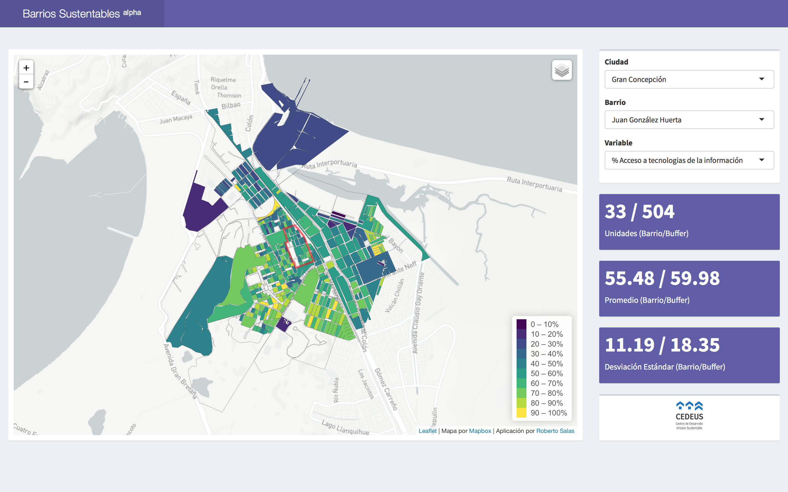

Foreword
What is Barrios Sustentables?
A visualization for indicators at manzana level for chilean territorial units.
The following pages will show you the documentation of the project using nice graphs for better understanding.

Acknowledgements
I want to give a big thank you to Stefan Steiniger, Rodrigo Villegas and Cristian Fuentes for their contributions to the project and obviously to CEDEUS to give the funds to mantain everything alive.